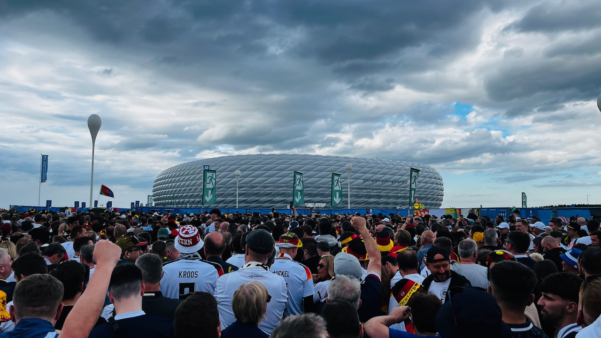
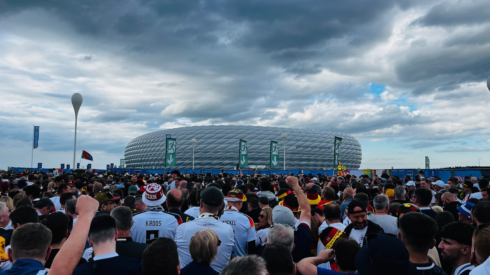
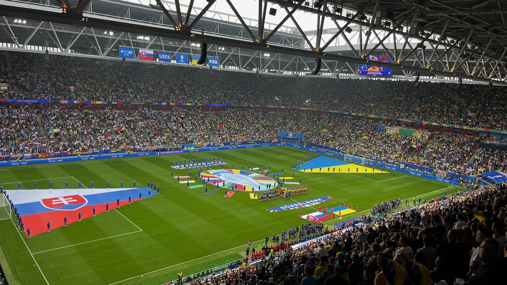
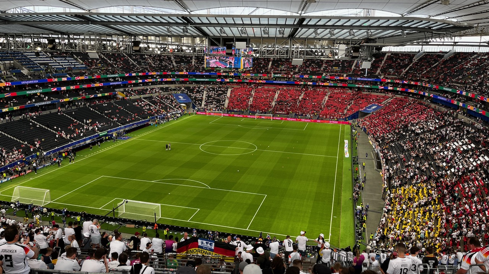

EURO 2024 - Tagebuch ⚽✍️
13.06.2024 - Zeit, dass sich was dreht.
Morgen geht's los. Fünf Städte sollen es sein in den kommenden elf Tagen. Die Bahn ist für eine Rundreise keine Option, mit dem Auto ist es verlässlicher. Erste Zwischenbilanz nach 2 Stunden Fahrt: 1 1/2 Stunden Stau. Läuft.
Als Karten-Nostalgiker wird es mit den digitalen Tickets ja sowieso schon immer schwerer, die Sammlung auszubauen. Bei der Euro gibt es allerdings gar keine Chance mehr dazu, da die Tickets vollständig als digitaler Zugang in der App hinterlegt sind und sich auch kein Screenshot erstellen lässt.
Irgendwas Greifbares muss aber sein. Ein Hoch auf ebay Kleinanzeigen: Ein 2006'er Trikot mit der Nr. 22, David Odonkor. üíõ

14.06.2024 - Deutschland vs. Schottland. 󠁿
Wie geht man denn jetzt ran an so eine Heim-EM? London liegt grade zwei Wochen zurück. Das ist noch nicht genug Zeit, die Spielzeit in Gänze verarbeitet zu haben. Und zugegeben: Ich hätte alle Tickets & ein erfolgreiches Abschneiden der deutschen Mannschaft ohne Zögern für eine erfolgreiche zweite Halbzeit im Wembley geopfert.
Hätte, hätte.. Jetzt geht es um was anderes. Und spätestens nach dem Zelt-Aufschlagen steigt dann auch die Vorfreude auf den Abend. Das liegt insbesondere an den fantastischen Gästen aus Schottland, die sich in großen Massen auch ohne Tickets auf den Weg gemacht haben, die Stadt in blau zu färben.
No Scotland, no party.
Die Orga rund ums Spiel ist leider eine Vollkatastrophe. Zwischen Aufbrechen am Odeonsplatz & Am-Platz-Ankommen liegen geschlagene drei Stunden (!), was auch an einem künstlich angelegten Nadelöhr von nur zwei geschaffenen Eingängen liegt.
Damit verbleiben grade mal 30 Minuten Zeit zum Klarkommen, bevor das Turnier angepfiffen wird.
Das torreiche Spiel ist das Eine. Noch mehr dominiert an diesem Abend aber das Gefühl wie ein sechsjähriges Kind das weiß, dass es über eine lange Zeit im Süßigkeitenladen eingeschlossen ist. Vier Wochen fast jeden Tag Fußball, wunderbar.
Abgerundet wird der Abend mit Musik & Lagerfeuer am Campingplatz. Fünf Gegentore? Kein Grund, enttäuscht zu sein. Was für wunderbare Menschen.
 


15.06.2024
Regen in München. Kein Grund, nicht wahlweise in Lederhose oder Schottenrock durch die Stadt zu ziehen. Schnittmenge: Die Gerstenkaltschale.
15.06.2024
What the ...? Spanien ballert Kroatien mit 3:0 bereits zur Pause weg. Das war brettstark. Alle reden über England und Frankreich, aber wieso zum Teufel war Spanien bisher nicht auf dem Zettel?
16.06.2024
Umzug ins Hotel, das zwei Tage nach dem Auftaktspiel jetzt wieder erschwinglich ist. Auf der Suche nach Polen-Niederlande im TV die Erkenntnis, mir für eine Sache noch keine Taktik zurechtgelegt zu haben: Es gibt gar nicht alle Spiele im Free-TV. Auswege: VPN & Streaming. Oder: Sportschau Radio. Fühlt sich an wie früher bei der WDR2-Konferenz.
19.06.2024 - Deutschland vs. Ungarn
Spiel Zwei, jetzt gilt's. Auch in den starken Jahren 06-16 ist Deutschland oft im zweiten Gruppenspiel gestolpert (bevor es dann sechs Jahre am Stück gestolpert ist). Der Gegner ist ein anderes Kaliber und das ist auch spürbar. Trotz frühem Tor und optischer Überlegenheit in Ballbesitz & Pässen wird hier sichtbar, dass der Auftakt kein Maßstab für den weiteren Turnierverlauf bilden kann.
Die Stimmung ist nochmal deutlich besser als beim Auftakt, was auch an den Ticketpreisen liegen könnte, die für das erste Spiel exorbitant hoch angesetzt worden sind. Für die Gruppenphase starten diese immerhin bei 30 Euro, wenn auch mit nach oben offener Grenze.
Ein Wiedersehen gibt es mit den Schotten, von denen Einige im Umfeld des Spiels als auch im Stadion unterwegs sind, obwohl ihr Team am Abend in Köln gegen die Schweiz antritt.
21.06.2024 Slowakei vs. Ukraine
Ein emotionales Nachbarschaftsduell in Düsseldorf. Nach klarer Auftaktniederlage liegt die Ukraine schon früh zurück und steht mit dem Rücken zur Wand. Nach dem Ausgleich drücken die Ukrainer auf den Sieg. Das Highlight des Spiels ist die fantastische Ballannahme & das Tor von Roman Yaremchuk vor heimischer Tribüne. Bei beiden Toren aber kommt die Freude aus allen Ecken des Stadions, das von den Blau-Gelben eindeutig dominiert ist.
Die Düsseldorfer Altstadt ist ein Highlight in diesen Tagen. Mit der eigenen Spielstädte in der Stadt und Gelsenkirchen, Dortmund & Köln im 1h-Umkreis ist die Stadt quasi das Herz der EM. Das spiegelt sich auch in den vielen verschiedenen Trikots am Abend wieder. Darunter auch, na klar, wieder viele Schotten.

22.06.2024 Belgien vs. Rumänien
Ein Tag, an dem einfach alles stimmt. Das Wetter, die Atmosphäre, die Stadt & das alles zusammen mit meinem Papa, der mich mit der Begeisterung für diesen Sport und das Drumherum überhaupt erst abgesteckt hat. Nach langer Zeit pilgern wir mal wieder über die Aachener Straße nach Müngersdorf.
Bereits eine Stunde vor Anpfiff ist die Hölle los. ¾ des Stadions trägt gelb. Das kommt vor allem wegen des kurzen Anreisewegs der Belgier sehr unerwartet. Zu Freed from Desire drehen alle einmal gemeinsam durch. Die Rumänen sind laut (!) und dauerpräsent. Daran tut auch die frühe 1:0 Führung für die roten Teufel keinen Abbruch. Erst das 2:0 durch Kevin de Bruyne in der 80. Minute führt zu einem kleinen Dämpfer. Kurz vor Ende des Spiels dann schallt aber schon wieder ein euphorisch optimistisches Romania durch das Müngersdorf Stadion, in dem auch heute wieder zwischendrin Schotten gesichtet werden konnten.
Fußballkultur, genauso wie sie sein soll.


23.06.2024 Deutschland vs. Schweiz
Letztes Gruppenspiel. Nochmal ein besserer Gegner. Und ein nochmal engeres Spiel. Das ist nicht zwingend Deutschlands Schwäche sondern auch die Stärke der Schweiz. Der Last-Minute Ausgleich durch Niklas Füllkrug sorgt für einen euphorischen Kick, katapultiert Deutschland allerdings auch in den auf dem Papier deutlich anspruchsvolleren Turnierbaum für die Gruppenphase.
Im Parallelspiel besiegelt Ungarn das Last-Minute Aus der Schotten, von denen sich einige auch wieder hier her verlaufen haben.

26.06.2024
Nach 2500km-Rundreise zurück in Hamburg. Die Türkei spielt im Volkspark & schlägt Tschechien in der 90 + 4. Minute, zieht damit ins Achtelfinale ein. Das Hupkonzert ist bis in die Nacht zu hören.
29.06.2024
Deutschland schlägt Dänemark. Verdient, aber mit Mühe.
Bitterer Abend für Joachim Andersen: Erst wird das Tor zurückgepfiffen, was früher ohne weiteren Kommentar unter gleiche Höhe durchgegangen wäre. Dann ist es sein (fragwürdiges) Handspiel, was zum Elfmeter und der deutschen Führung führt.

01.07.2024 Frankreich vs. Belgien
Die Bahn regelt. Geplante Ankunft in Düsseldorf: 09:20. Tatsächlich angekommen: 12:10. Bei 2h Verspätung gibt es 50% des Ticketpreises zurück: 6€, ein Getränk im Stadion. Yummi.
Das Spiel selbst gibt leider nicht so viel her. Ein gegenseitiger Abnutzungskampf wird in der 85. Minute durch ein abgefälschtes Tor zugunsten Frankreichs entschieden.
In der Altstadt gibt es anschließend das Abendspiel zwischen Portugal & Slowenien zu sehen. Ein torloses Unentschieden nach 120 Minuten, man merkt, dass die Leichtigkeit der Vorrunde jetzt ein wenig dem K.O.-Modus weicht. Der Stimmung tut das keinen Abbruch, die Atmosphäre ist fast besser als im Stadion. Natürlich steigt auch der Schottland-Zähler auf Sechs.


02.07.2024
1x Deutschland - Spanien für scheißteuer im Warenkorb. Ist nicht für mich gedacht, aber den Trip lasse ich mir trotzdem nicht entgehen.
04.07.2024
Lauf um die Alster. Mehrere hundert CR7 Groupies rund ums Fontenay, vor dem der portugiesische Bus steht. Soviel Personenkult in Hamburg war seit HW4 nicht mehr.
05.07.2024
Sommer, Sonne, Heim-EM & Viertelfinale, geil. In Stuttgart liegt eine besondere Atmosphäre in der Luft, in der Innenstadt ist die Vorfreude schon am Mittag greifbar.
Papa & ich schlendern einmal über das Fanfest und machen uns dann schon auf gen Neckarstadion. Kleiner Insidertipp: Der Fitnesssalat im Sportrestaurant im Neckarpark.
Mit Sepp Maier gibt es auch noch einen prominenten Gast & Europameisterschafts-Vibes am Tisch. Ganz wegatmen lässt sich die Tatsache, dass da ein saustarker Gegner wartet, allerdings nicht.
Vor dem Stadion (2 Schotten gesichtet) müssen wir leider auseinander gehen, der Schlossplatz ist zwei Stunden vor Spielbeginn schon rappelvoll. Nach Anpfiff folgen 120 Minuten richtig guter Fußball, Drama & Fingernägelkauen.
In der 119. zerplatzen alle Europameisterschafts-Träume. Nachdem Niklas Füllkrug den letzten Kopfball neben das Tor setzt: Stille.
Immerhin: Als Anhänger von Borussia Dortmund hat man in diesem Moment einen Vorsprung in der Übung darin mit gebrochenem Herzen umzugehen.
Beim Reise-Vorbei-Abschluss-Bier kommt mir das Nick Hornby Zitat wieder in den Sinn:
Ich verliebte mich in den Fußball, wie ich mich später in Frauen verlieben sollte: plötzlich, unerklärlich, unkritisch und ohne einen Gedanken an den Schmerz und die Zerrissenheit zu verschwenden, die damit verbunden sein würden.

06.07.2024
Kurze Nacht und früher Wecker für die Rückfahrt nach Hamburg.
Coole Begegnung im Zug mit Steve: Snapback-Cap, Nasenring, Sneaker. Hätte ich auf maximal 40 geschätzt, ist aber 65 (!). Steckt mich sehr mit seiner Lebensfreude an. Und das, obwohl sich im Laufe des Gesprächs rausstellt, dass sein Vater in dieser Woche verstorben ist.
In Frankfurt steigt ein JGA zu. 10 Uhr morgens, Steve holt zwei Bier aus dem Boardbistro (Macht nur Spaß, wenn man mitmacht. Weiß ich aus meiner Zeit in Köln) und wir verbringen die Zugfahrt frei nach Dragoslav Stepanović: Lebbe geht weider.
06.07.2024
England schlägt die Schweiz im Elfmeterschießen. Es wächst die bittere Erkenntnis, dass bei diesem Turnier nicht zwingend guter Fußball zum Erfolg führen muss.
09.07.2024
Gefühlt ist das Turnier mit dem Ausscheiden der deutschen Mannschaft zum ersten Mal zu Ende gegangen. Sich nochmal aufzuraffen kostet Energie, lohnt aber: In einem guten Halbfinale brennt es vor allem in den ersten 30 Minuten. Die Gnadenlosigkeit, mit der Lamine Yamal das 2:1 in den Winkel knallt lässt aber für den Moment wenig Zweifel an der Frage zu, wer nächsten Sonntag den Pokal in den Berliner Nachthimmel stemmt.
10.07.2024
Die Krümmung des Raum-Zeit Kontinuums oder: England spielt Fußball. In der 90. Minute verstummt die Oranje-Partystimmung in Dortmund. Das ist doppelt schade, da ESP - NIE wahrscheinlich das fußballerisch attraktivere Endspiel geworden wäre. Außerdem endet die wilde Reise der Niederländer, die heute mit einer Mannschaftsstärke von 80.000 in Dortmund aufgeschlagen sind.
Der Snollebollekes Song geht seit ein paar Tagen nicht mehr aus dem Kopf. Das Abgrasen nach Videos im Netz schafft dabei keine Abhilfe.
Flashback in eine Zeit, in der verwackelte Videos aus Stadien noch digitales Gold waren. 18 Jahre und damit fast so alt wie Youtube selbst das horto magiko Video der Panathinaikos Fans, dass ich mir als 15-Jähriger bestimmt 200 Mal angeschaut habe. Der erste Kommentar trifft es genau: Every couple of years I come back and watch this and every fucking time it gives me goosebumps.
Wer weiß, wie die Welt in 18 Jahren aussieht. Aber bis dahin werde ich mir noch oft Holland-Videos der Euro 2024 anschauen, soviel ist sicher.
13.07.2024
Fundstück aus dem Netz, auf die Melodie von Atomic Kitten's Whole Again:
Southgate you're the one, you still turn me on. //
Footballs coming home again.
Es würde alles ad absurdum führen und grade das macht es wieder so herrlich attraktiv.
14.07.2024
Im Laufe des Tages kippt das Sympathie-Pendel gen England. Einfach aus der Schaulust heraus, was in Berlin dann los wäre. Das Olympiastadion ist weiß gedeckt, Spanien hat zum Endspiel nicht mehr Anhänger mobilisiert als Borussia Mönchengladbach zu einem Auswärtsspiel bei Hertha. Das ist ungefähr so unwürdig wie die Almans, die Cucurella heute zum zweiten Mal in Serie ausgepfiffen haben. In meiner idealen Fußballwelt spielt allerdings auch Rot-Weiß-Essen europäisch, kein Platz für Fanromantiker an dieser Stelle.
Endspiele waren in den letzten Jahren meistens eher schwache Spiele, so ist das auch heute. Am Ende setzt sich die fußballerisch mit Abstand beste Mannschaft dieses Turniers durch.
La Furia Roja, fortan Rekordsieger. Muy bien merecido. ¡Felicidades!